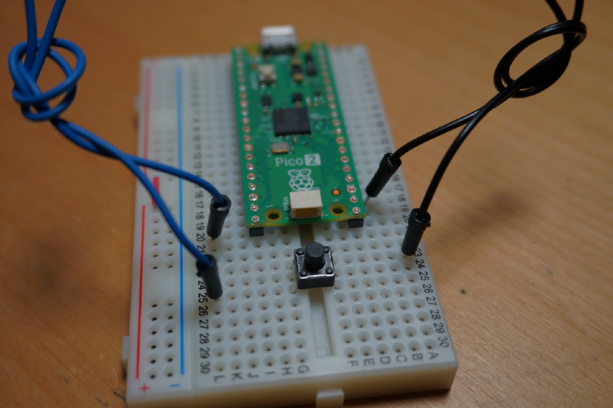

このページが見れているということは、 個人サイトがちゃんと公開できたってことですね！
いやー、なんか今までとは違う喜びが湧き上がってくる！！
何なんだろう、この感じ。 とりあえず今はめちゃくちゃミスドに行きたい気分です。
ポン・デ・リング食べまくりたい。
なんかすごい感情なんだけど、 うまく言葉に表せないんですよね。 とにかく「個人サイトを公開できた！」というだけで かなり嬉しい。
そして、もう一つ便利だったもの
あと、このHTMLを書くことで めちゃくちゃ役に立ったものがあります。
それは……
BR入力機！！
これだけで開発のスピードが 何倍も上がった気がします。
使ったのは、 Raspberry Pi Pico 2 H と タクトボタン。
本当にこれだけで、 HTMLを書くときにかなり便利な入力装置が作れました。

実際に作ったものは超簡易的なんですが、 これが意外と便利なんです。
開発中に何度も
<br>
を入力することがあるので、
ボタン一つで入力できるだけでもかなり楽になります。
こういう小さな自作ツールって、 作ってみると意外と作業効率が変わるんですよね。
飛ぶぞ。
プログラムも置いておきます
せっかくなので、 今回作ったBR入力機のプログラムも置いておきます。
↓ code.py をダウンロードこれからもいろいろ作っていきます。